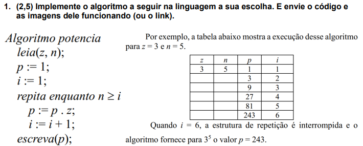
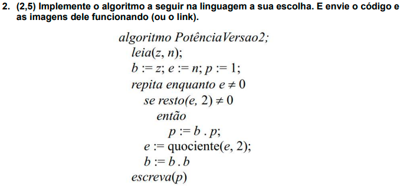
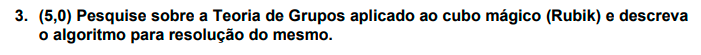

Informe os valores de "z" e "n" depois clique em "Verificar" para finalizar a demonstração.
Valor de z:
Valor de n:

Informe os valores de "z" e "n" depois clique em "Verificar" para finalizar a demonstração.
Valor de z:
Valor de n:

O cubo mágico, também conhecido como cubo de Rubik, é um quebra-cabeça tridimensional que consiste em um cubo com seis faces coloridas. Cada face tem nove peças móveis, ou "cubinhos", que podem ser giradas independentemente. O objetivo do jogo é misturar os núcleos e, em seguida, resolver o quebra-cabeça para que cada face tenha uma única cor.
Existem várias estratégias e métodos para resolver o cubo mágico, e muitas pessoas dedicam tempo e esforço para se tornarem proficientes em resolvê-lo o mais rápido possível. O cubo mágico pode ser um desafio fascinante e um exercício de resolução de problemas, além de ser uma ótima maneira de desenvolver a mente e desenvolver habilidades de pensamento crítico.
Existem muitos algoritmos diferentes para resolver o cubo mágico, mas aqui está um exemplo de um método popular, conhecido como método de declarados:
Esse é apenas um exemplo de um método para resolver o cubo mágico, e existem muitos outros métodos e algoritmos disponíveis. O processo de resolução do cubo mágico pode ser desafiador e requer prática e paciência, mas também pode ser muito gratificante quando você finalmente conseguir resolver o quebra-cabeça.